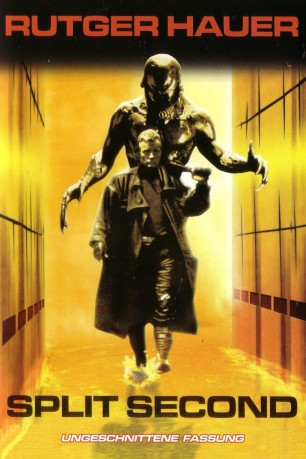
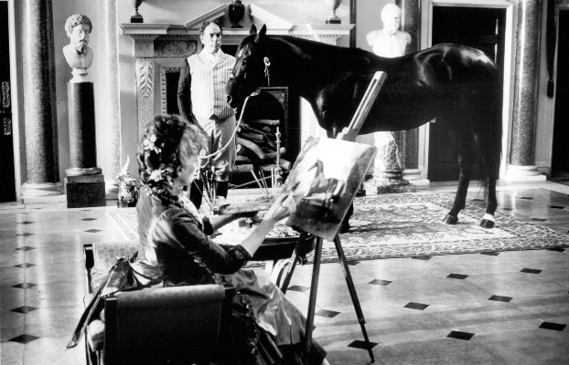
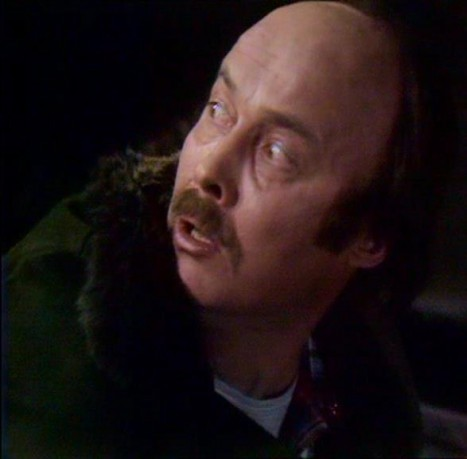

#10829 Split Second
 
 IMDB-Wertung: 6.2 / 10
IMDB-Wertung: 6.2 / 10  Metascore: 0
Metascore: 0 
London im Jahr 2008. Aus der einst pulsierenden Hauptstadt wurde eine trostlose und von Umweltgiften heimgesuchte Stadt, in der die Ratten an Oberhand gewinnen. Ein Mörder treibt sein Unwesen, indem er seine Opfer scheinbar nach einem alten Voodoo-Ritual brutal umbringt und ihnen das Herz entfernt. Der Polizist Harley Stone und sein Partner begeben sich auf die Jagd nach dem unmenschlichen Killer, der sich als nächstes Opfer anscheinend Stones Freundin ausgesucht hat ...
Jahr: 1992
Dauer: 90 Minuten
FSK: 16
Land: England Studio: Astro DistributionTonspuren: DD5.1 - ,
Untertitel:
Auflösung: 1080p (1920x1080) Größe: 5591 MB
Genre: Action, Thriller, Horror, Sci-Fi, Krimi
Regisseur: Tony Maylam
Drehbuch: Gary Scott Thompson
Soundtrack: Francis Haines, Stephen W. Parsons
Darsteller:
 Rutger Hauer als Harley Stone
Rutger Hauer als Harley Stone Kim Cattrall als Michelle McLaine
Kim Cattrall als Michelle McLaine- Alastair Duncan als Det. Dick Durkin
 Michael J. Pollard als The Rat Catcher
Michael J. Pollard als The Rat Catcher-  Alun Armstrong als Thrasher
 Pete Postlethwaite als Paulsen
Pete Postlethwaite als Paulsen- Ian Dury als Jay Jay
- Tony Steedman als Pat O'Donnell
- Steven Hartley als Foster McLaine
 Ken Bones als Forensic Expert
Ken Bones als Forensic Expert- Dave Duffy als Nick 'The Barman'
 John Bennett als Dr. Schulman
John Bennett als Dr. Schulman-  Tony Sibbald als Bald Man in Suit
 Jason Watkins als Coroner's Assistant
Jason Watkins als Coroner's Assistant- Shend als Precinct Policeman
- Angie Hill als Nurse
- Daniella Rich als Girl in Nightclub
- Roberta Eaton als Robin
 Sara Stockbridge als Tiffany
Sara Stockbridge als Tiffany- Colin Skeaping als Drunk
- Stewart Harvey-Wilson als The Killer
- Paul Grayson als The Killer
- Chris Chappell als Rat Catcher's Assistant
- Charlotte Hick als Little Girl
- Morris Paton als Jogger
- Tina Smith als Mutilated Woman
- Martin Ronan als First Ambulance Attendant
- Phil Smeeton als Second Ambulance Attendant
- Tina Shaw als Nightclub Stripper
- Rob Edmunds als Policeman
- Papillon Soo als Waitress
- Rikki Howard als Cage Security Policewoman
- Alan Stocks als Policeman
- Paul Casey als Policeman
- Susan Aderin als Precinct Policewoman
- Sheila Hyde als Precinct Policewoman
- Cathy Walker als Precinct Policewoman
- Jane van Hool als Precinct Policewoman
- Vanessa Victor als Girl in Nightclub
- Jadene Doran als Girl in Nightclub
- Havoc als Dog
- Lorraine Pascale Woodward als Girl in Nightclub
- Lisa Roudette als Girl in Nightclub
- Bibi Bohorquez als Girl in Nightclub
- Dolores Hernández als Girl at Bar
- Atilla als Boy at Bar
- Debra Rodman als Girl in Nightclub
- Liz Lisfield als Girl in Nightclub
- Maia Jopling als Girl in Nightclub
- Mayumi Cabrera als Girl in Nightclub
Datei: X:\1992\Split Second (1992, FSK16, 1920x1080).mkv seit 09.03.2019
Festplatte: Gemischt-01+Anime
 Es gibt insgesamt 57 Filme in der Gruppe '1992'
Es gibt insgesamt 57 Filme in der Gruppe '1992'